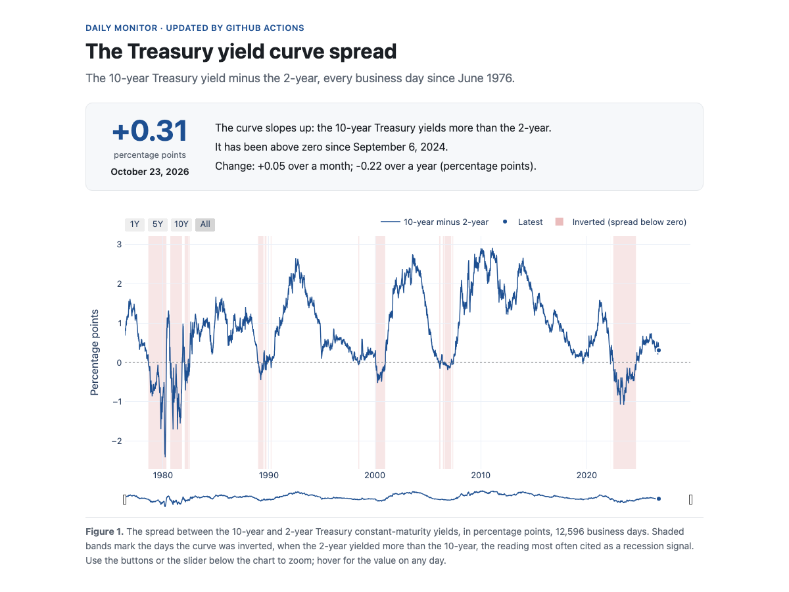
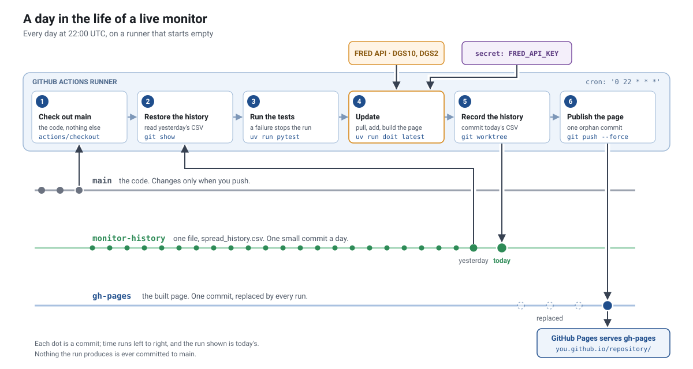

Building a Live Monitor with GitHub Actions#
Your HW 2 replication answers a question about one day. A monitor answers it every day, by itself: a job wakes up on a schedule, pulls the newest data, adds it to what it has already computed, and republishes the result. This page walks through the smallest monitor that does everything the SVIX monitor in HW 3 does, so that in HW 3 your hours go to the math and not to the machinery.
The example is the Yield Spread Monitor: the 10-year Treasury yield minus the 2-year, every business day since 1976. The finance is one subtraction, which is the point. Everything else on this page is about how a pipeline runs on its own.

The page the monitor publishes. It is rebuilt every day by GitHub Actions and served by GitHub Pages; no server, no laptop left on.
The repository#
Five short files do the work, and two workflows run them.
File |
What it does |
|---|---|
|
Pulls the 10-year and 2-year yields (FRED series DGS10 and DGS2) from the FRED API. With |
|
Computes the spread, adds the new days to the history, and checks the history before anything publishes. |
|
Builds |
|
Reads the API key and the dates from |
|
The tasks: |
|
The daily job. |
|
The backfill, run by hand with a start date. |
A day in the life#

Every day at 22:00 UTC, GitHub starts a fresh virtual machine, the runner, and works through six steps. The runner starts empty every time: whatever the job computed yesterday is gone. Everything interesting about this design follows from that one fact.
Check out
main. The code, and nothing else.Restore the history. The one thing carried over from yesterday is a CSV of dates and spreads, kept on a branch of its own.
git showreads a file from a branch without checking the branch out:git fetch origin monitor-history:monitor-history git show monitor-history:spread_history.csv > _output/spread_history.csv
Run the tests. If they fail, the job stops and nothing publishes.
Update.
uv run doit latestpulls the last ten days from FRED, adds the days the history does not have, checks it, and rebuilds the page. The API key comes from the repository’s secret store (below).Record the history. A second working directory on the history branch (
git worktree), a copy of the new file, one commit, one push. A weekend run adds no days and makes no commit.Publish the page. The built page goes on the
gh-pagesbranch as a single commit with no parents (an orphan commit), force-pushed, so the branch never grows. GitHub Pages serves it. Last week’sgh-pagesbranch was kept by hand, rebased ontomainand force-pushed after every rebuild; an orphan commit needs none of that, because there is no history to keep.
The schedule is set by the source, not by habit. FRED posts the H.15 yields for the previous business day at about 3:15 pm Chicago time, so the job runs after that. HW 3’s job runs at 14:30 UTC instead, when CME’s settlement prices from the night before have reached Databento.
Where the state lives#
A monitor needs state: something it remembers from one run to the next. Here the state is the history. Because the runner forgets everything, the history has to live somewhere outside it. The candidates:
Where |
Survives to tomorrow? |
The catch |
|---|---|---|
The runner’s disk |
No |
Wiped after every run. |
Commits on |
Yes |
Output mixed into the source, a commit a day forever, and a workflow that pushes to |
|
Until the next deploy |
Replaced on every run. |
The Actions cache |
Not reliably |
Evicted after seven days unused; a cache, not a record. |
Workflow artifacts |
Ninety days |
They expire. |
A branch of its own |
Yes |
One file, one small commit a day. |
The monitor uses the last row. Three branches, one job each:
mainholds the code. The workflow never writes to it, and nothing a run produces is ever committed there.monitor-historyholds one file,spread_history.csv. Its log is the ledger of the series:git log -p monitor-historyshows the chart being built, one line a day.gh-pagesholds the built page, one commit, replaced by every run.
Does a monitor need state at all?#
Not always. FRED returns the entire 50-year history of both yields in two requests and about a second, so this monitor could rebuild its history every morning and keep no state at all. It keeps the history branch anyway, because that is the mechanism HW 3 needs, and HW 3 needs it for a real reason: each session of E-mini option settlements is 19 MB and one to two minutes to pull from Databento. Rebuilding a year of SVIX every morning would mean hours of pulling a day.
The rule: keep state when recomputing it is expensive or impossible; otherwise recompute. State is a liability. It can drift, it has to be backed up, and a bug that corrupts it does not fix itself on the next run.
Two commands: doit and doit latest#
uv run doit # the backfill: pull START_DATE..END_DATE, build the history and the page
uv run doit latest # the daily update: pull the last ten days
START_DATE=2020-01-01 uv run doit # backfill from a date
Plain doit is the backfill. It pulls everything in the window from the
settings, all the way back to 1976 by default, and fills the history. The
pull runs again whenever that window changes, because the task declares the
window as a dependency:
"uptodate": [config_changed({"start": settings.START_DATE, "end": settings.END_DATE})],
doit latest is the daily update. It has "uptodate": [False], so it runs
every time it is asked: a daily update’s job is to check again. On GitHub,
backfill.yml runs the backfill from the Actions tab with a start date you
type in, once, when the monitor starts.
Secrets#
The pull needs a FRED API key. Locally the key lives in .env, which is
gitignored. On GitHub it lives in the repository’s secret store
(Settings > Secrets and variables > Actions), and the one step that
needs it reads it from there:
- name: Update the monitor (pull the last ten days, add them to the history)
env:
FRED_API_KEY: ${{ secrets.FRED_API_KEY }}
run: uv run doit latest
The key is never in a file, never in a commit, and never in the log: GitHub masks it. If the secret is missing, the step fails with the pipeline’s own message. This is the log of the example’s very first run, pushed before any key existed:
FRED_API_KEY is not set. Locally: copy .env.example to .env and add your key.
On GitHub: Settings > Secrets and variables > Actions > New repository secret.
TaskFailed - taskid:latest
Command failed: 'python src/pull_yields.py --latest' returned 1
Error: Process completed with exit code 1.
The tests ran and passed first; the record and publish steps never ran, so there was nothing half-published to clean up. FRED’s terms also require each user to have their own key, which is the other reason it is a secret and not a line in the code.
Checks before anything publishes#
An unattended job has no one watching it, so it checks itself twice.
Unit tests (
src/test_monitor.py) check the code: that FRED’s “.” for a missing day becomes a missing value, that the spread is computed only on days with both yields, that merging keeps one row per date, and that the workflows read the key from the secret store. They run offline, with no key, in under a second, as the job’s third step.Data checks (
check_historyinsrc/update_history.py) check today’s data: no duplicate dates, nothing out of order, no spread beyond six percentage points, and a newest reading no more than ten days old. If any check fails, the update step fails, the job stops, and yesterday’s page stays up.
A unit test asks whether your function is right. A data check asks whether today’s data are sane. A live pipeline needs both.
Traps#
A workflow that pushes to
mainruns itself. A push tomainis a trigger, so a job that commits its output there starts again, forever, unless every push says[skip ci]. Keeping output offmainremoves the problem.A copy made from a template runs once, immediately, on its “Initial commit”, before you have added the secret. The workflow skips that run (
if: github.event.head_commit.message != 'Initial commit').Pages has to be switched on. Settings > Pages > Deploy from a branch >
gh-pages// (root). The page also needs an empty.nojekyllfile, or GitHub runs Jekyll on it.Free minutes and Pages need a public repository in your own account.
Cron is in UTC, and GitHub may start a scheduled run several minutes late when it is busy. It also turns off the schedule in a public repository that sees no activity for sixty days.
Two runs at once would push over each other. Both workflows share a
concurrencygroup, so the second waits for the first.
Data, copyright, and terms of use#
Three different things, often confused:
Copyright belongs to whoever created a work. The 10-year and 2-year yields come from the Federal Reserve Board’s H.15 release, a work of the U.S. government, and are in the public domain. FRED’s own spread series, T10Y2Y, is tagged as copyrighted, which is one reason the monitor computes the spread itself.
Terms of use are a contract with the service you pull from. FRED’s allow public-domain series to be displayed with a citation, require the notice “This product uses the FRED® API but is not endorsed or certified by the Federal Reserve Bank of St. Louis,” and restrict storing and archiving FRED content. So the history branch stores only the spread the monitor computes, never the yields, and the yields live in
_data/, which is gitignored and discarded after every run.Licenses cover data you pay for. The Databento and WRDS data in HW 3 come under the course’s licenses, which is why the published charts there show derived quantities and not the raw quotes.
Deploy your own copy#
Get a FRED API key. Make a free account at fredaccount.stlouisfed.org and request a key: 32 lowercase letters and digits.
Copy the repository. On the repository page, Use this template > Create a new repository, in your own account, public.
Add the key as a secret. In your copy: Settings > Secrets and variables > Actions > New repository secret. Name
FRED_API_KEY, value your key.Backfill. Actions > Backfill the Yield Spread History > Run workflow, with the default start date. About a minute; it creates the
monitor-historybranch.Publish. Actions > Build and Deploy the Yield Spread Monitor > Run workflow. About a minute; it creates
gh-pages.Turn on Pages. Settings > Pages > Deploy from a branch >
gh-pages// (root). A minute later the page is athttps://<your-username>.github.io/<repository>/.
Tomorrow, look at the monitor-history branch: one more commit, one more line.
From here to HW 3#
The SVIX monitor in HW 3 is this same job with a harder middle.
Yield Spread Monitor |
HW 3’s SVIX monitor |
|
|---|---|---|
Data |
FRED API, public domain |
Databento CME Globex, the course license |
Secret |
|
|
Daily pull |
Ten days, two requests, a second |
The latest session, one to two minutes |
Backfill |
The whole series in a second |
One to two minutes per session |
History |
|
|
Page |
One HTML page with a Plotly chart |
Four notebooks and a ChartBook site |
Schedule |
22:00 UTC, after FRED posts |
14:30 UTC, after CME’s settlements reach Databento |
HW 3 adds three things this example does not need. A data source that is
down is not a bug: its pulls retry for about eight minutes, and if the
source is still down the run ends with a warning instead of a failure.
Its site build is the default doit, which would otherwise pull the whole
trailing week again, so the workflow marks the morning’s pull as done with
doit reset-dep. And two of its tests need WRDS, which the runner does not
have, so the workflow skips the test task and the course runner grades it.